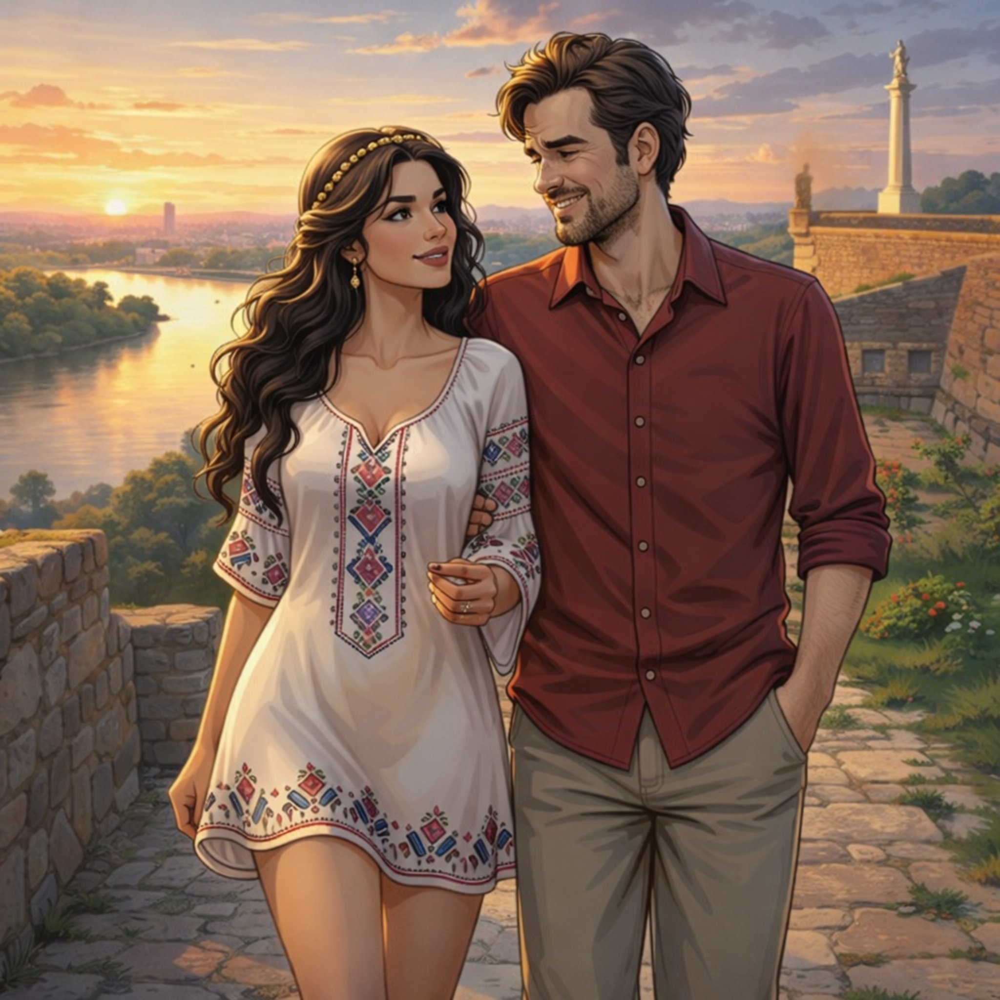

Поглавље 12: Калемегдан – Прво место
Página individual del capítulo con lectura y ejercicios.


Луис и Наташа крећу ка првом месту на мапи – Калемегдану. Док шетају кроз парк, Наташа почиње да прича о историји овог места.
"Калемегдан је једно од најстаријих места у Београду," каже Наташа. "Овде су се одиграле многе битке. Ова тврђава је бранила Београд вековима. Видиш те древне зидине? То су остаци из времена Римљана и Турака."
Луис гледа око себе, импресиониран. "Ово је невероватно. Осећам се као да сам у другом времену."
Наташа се смеје. "Волим Калемегдан због његове историје и лепог погледа на реке. Али..." Она застаје на тренутак. "Не волим када је превише туриста. Понекад изгубимо осећај за град."
Луис је слуша пажљиво. "А шта још волиш у Београду?"
Наташа се осмехне. "Волим уличну уметност и кафиће. Београд има душу. Али не волим када је град превише бучан и хаотичан. Понекад ми треба мир."
Луис гледа Наташу док она прича. Осећа како се јаче заљубљује у њу. Њена страст према граду и њена искреност чине је још привлачнијом.
Наташа се окреће према Луису и узме га за руку. "Луис, ти си мој. Не дозвољавам да те било ко узме од мене."
Луис се осмехне. Њена посесивност му се, изненађујуће, свиђа. "Не брини, Наташа. Ја сам твој."
Док шетају, Луис примети две жене које их посматрају из даљине. Оне изгледају озбиљно и пажљиво их прате. Луис шапће Наташи: "Видиш ли те жене? Изгледају као да нас посматрају."
Наташа баци поглед у њиховом правцу. "Можда су туристи. Или можда нешто друго. Али не брини се. Ја ћу те штитити."
Луис се осмехне, али осећа благу нервозу. Нешто му говори да ове жене нису ту случајно.
Наташа га повуче за руку. "Хајде да наставимо. Морамо да пронађемо прво камење."
Они настављају шетњу, али Луис не може да се отресе осећаја да их неко прати.
Крај дванаестог поглавља.